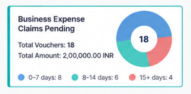
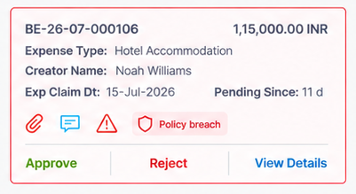
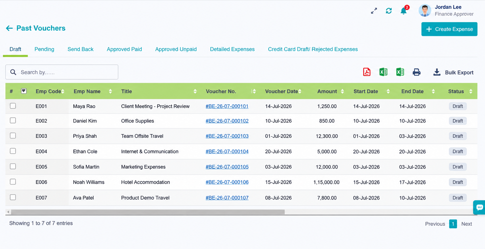

Evidence
Context hidden in individual records
Approvers described opening individual records to gather the context needed for a decision.
Design response
Move category, age, amount, policy state, and action earlier in the hierarchy.
Enterprise SaaS · Finance operations
A focused redesign of an enterprise Travel & Expense approval dashboard, helping managers identify requests needing attention, understand policy exceptions and process routine approvals.
Context and problem
The approval dashboard contained the information managers needed, but approvers still had to work out what needed attention first.
The broader product was seeing lower-than-expected customer traction, and recurring feedback highlighted the approval experience as one area worth improving. Routine reports, ageing submissions, and policy exceptions could appear similar during scanning, Approvers described opening individual records and spending too much time to understand which requests needed attention, particularly when older submissions and policy exceptions appeared alongside routine work.
The goal was to improve the decision experience without rebuilding the core system.
How might we help approvers identify what requires attention, understand why it requires attention and take the appropriate action without opening every report?

Discovery and insight
Communicated with a small set of client-side expense approvers in managerial and finance roles and reviewed how they identified pending work, interpreted exceptions, and decided what required attention first and the entire user journey.
Combined those conversations with workflow walkthroughs, recurring client feedback, support issues and an assessment of the existing experience.
Evidence
Approvers described opening individual records to gather the context needed for a decision.
Design response
Move category, age, amount, policy state, and action earlier in the hierarchy.
Evidence
Pending volume alone did not reveal how long work expenses had been waiting.
Design response
Show ageing bands for 0–7, 8–14, and 15+ days.
Evidence
Ageing and policy exceptions represented different reasons to act.
Design response
Separate policy state from ordinary ageing status.
Evidence
Eligible reports were processed one at a time even when risk was low.
Design response
Introduce page-level bulk approval with explicit safeguards.
Approval workflow
Previously, approvers opened each expense report to gather the details needed for a decision. The redesign brings decision context into the dashboard and supports a separate route for eligible bulk approvals.
Before
Enter the application.
See category cards and pending expenses.
Read the details needed to make a decision.
Decide after reviewing that report.
Repeat the report review and decision for each pending expense.
Redesigned flow
Enter the application.
See category cards and report summaries.
Check the amount, pending duration and policy state.
Choose the appropriate review path
Use the amount, age and policy context in the summary.
Inspect the report when it requires closer review.
Make the decision after review.
Use the View All / Bulk Approval entry point.
Limit selection to the current page.
Review the selected requests before confirming.
Intended success criteria
Design decisions
Prioritisation
A pending count tells an approver how much work exists, but not which work is becoming urgent. I introduced ageing distribution within each report category so approvers could distinguish recent submissions from reports waiting longer.
Make every band label and count explicit, and reassess whether a compact stacked bar would support comparison better than repeated donut charts.

Risk semantics
A report could require attention because it was old, because it violated policy or because both were true. I surfaced policy state directly in the report summary. This was intended to help approvers understand the reason for attention before choosing the next action.
Critical safeguard: Reports containing policy violations were not eligible for bulk approval.

Efficiency with safeguards
Routine requests involved repeated approval actions. A wider selection could make it harder to understand which requests would be affected, especially when policy exceptions were present.
Introduced page-level selection for eligible reports. Policy-breach reports were excluded, approval confirmation and rejection-reason capture provided accountability around consequential actions. The action was limited to the current page

Evaluation
The dashboard is now in client use. I did not conduct final usability testing. The checks below describe a proposed evaluation; verified task-performance results are not available for this case study.
Task: Choose the next request to review from a mixed queue.
Record: Correctness against agreed priority rules, time taken and unnecessary detail-page visits.
Task: Compare an older routine request with a newer request containing a policy exception.
Record: Explanation of each status and choice of review action.
Task: Approve eligible requests from the current page while excluding policy exceptions.
Record: Correct completion, time, selection mistakes, understanding of scope and results, and recovery from a simulated partial failure.
Design to code
I translated the approved dashboard design into the existing product front end.
Reviewed dashboard design in Figma.
HTML5, Bootstrap, CSS and JavaScript.
Added to the existing product codebase.